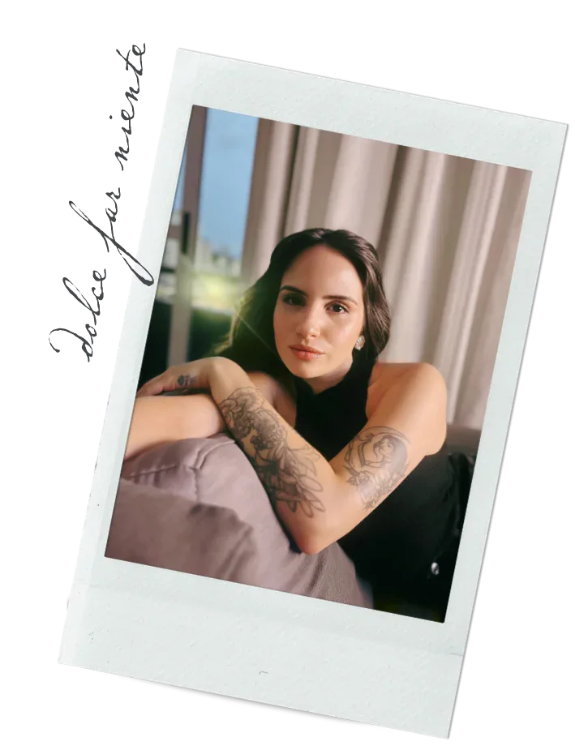
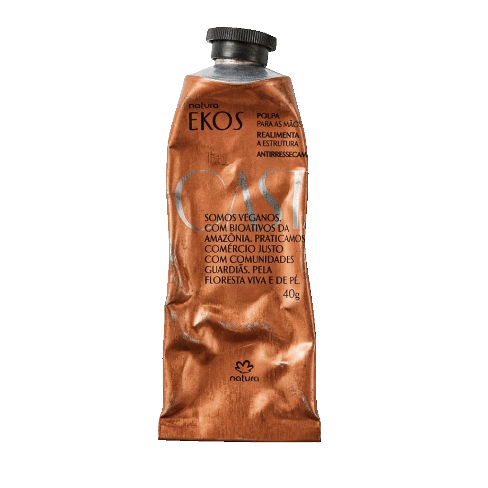

Aline Angela
Aline
Angela


Brasiliense, filha de pernambucana e mineiro, criada em Curitiba, morei anos em Itajaí e hoje o mundo é minha casa.
Redatora, formada em Marketing e em Nutrição, com pós graduação em Neuropsiconutrição. É o que faço da vida.
Journaling, amar, criar playlists, caminhar para fotografar e conhecer o mundo em detalhes é o que faço para me sentir viva.
Chás
Filmes
Aromas
Personagens
Músicas
Petite
Sempre na busca por roupas com modelagens, tecidos e estilos que realmente sejam inclusivas para todos os corpos de mulheres que têm menos de 160cm de altura.
Neutral olive skin tone
Sempre na busca por roupas com modelagens, tecidos e estilos que realmente sejam inclusivas para todos os corpos de mulheres que têm menos de 160cm de altura.
Gold + Silver
Sempre na busca por roupas com modelagens, tecidos e estilos que realmente sejam inclusivas para todos os corpos de mulheres que têm menos de 160cm de altura.